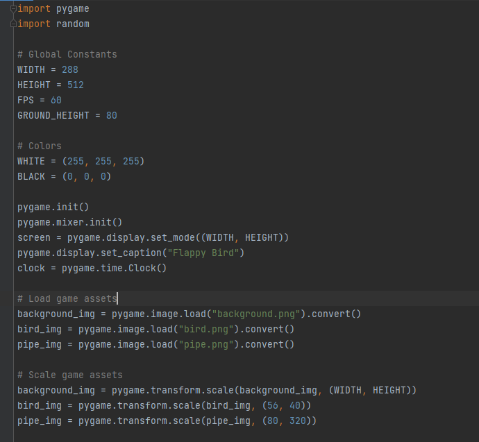
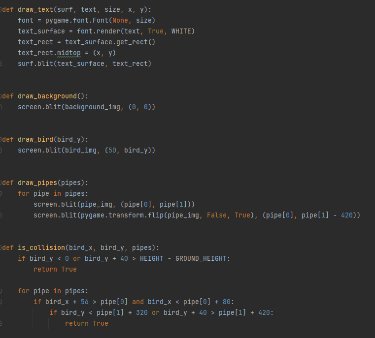
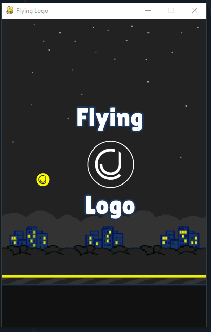
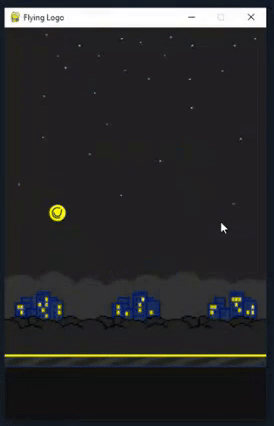
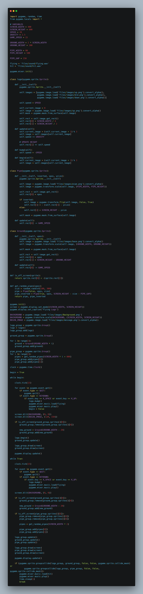
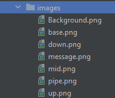
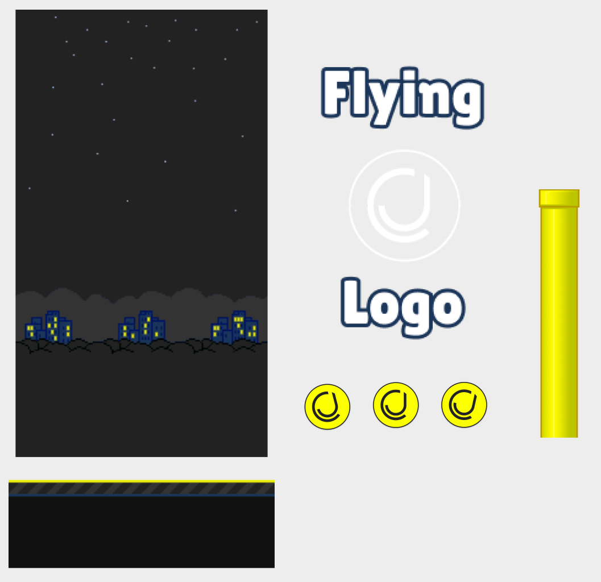
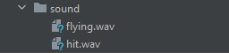
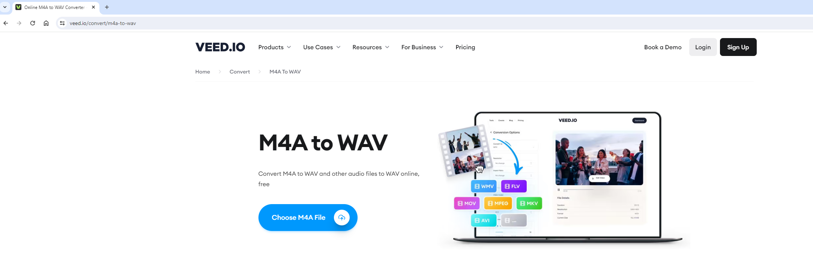

Hi all,
I am the first to admit I am not the best coder out there. Truth be told the only satisfaction I get from coding is when the run button actually works after countless errors. But the process of getting to that stage can sometimes be quite fun.
A colleague at work specifically sent me this article. "Based on the provided search results, it appears that two new AI chatbot models named "im-a-good-gpt2-chatbot" and "im-also-a-good-gpt2-chatbot" have recently emerged on the LMSYS Chatbot Arena benchmarking site, sparking significant speculation and interest within the AI community.".... "The models excel at coding tasks, with examples of generating code for games like Snake and Flappy Bird with minimal prompting"
Now chatGPT and the equivalents have been knocking around for a bit now and seemingly are only getting better at knowing what I mean when I frantically ask it to amend the code for me. So, I thought why not set myself a challenge. Can I create my own version of flappy bird simply through asking it to rewrite my script... over and over and over again?
So by simply asking it to "create the flappybird game" in python it gave me some clear indication of width, height, different images that will need loading and how it leverages the pygame package.

Followed by some functions on how to create the pipes, what happens when the bird collides with the object - and generally how things render on the page.

When I first gave it a go a few things stood out:
I needed to design the images for the background, "bird" and pipes like in the game
I would need to make sure the pipes dont overlap one another
I needed to stop the bird falling through the floor off the screen.
It would be nice to add some audio to the game too (I ended up cloning these from an online repository I saw.)
So let's jump ahead into the main code and explain what it does and things that needed amending as I went on with the prompts to create my own version of Flappy bird called "Flying Logo"

You can see a gif of it working below.

The code is an implementation of the Flappy Bird game using the Pygame library in Python. You can find it in the repository.

Here's an explanation:
The code sets up the screen size, game variables, and loads the game assets such as images and sounds.
These needed playing around with depending on the screen size and what you want to include.

Only 7 images are needed. Even then its overkill as I create a "Wobble" effect to the logo for when it is in flight. (up mid & down)
Below are some screenshots of those files in Figma. You'll find them in the repository. You'll see they mostly look like the original game in terms of the pipe and background. I amended a few cosmetics and the colors to suit my branding a bit more - but architecturally reflect the original game. Most these files you can find on the internet with ease.

The logo class represents the bird (logo) character. It has attributes like speed, current image, and position on the screen. The update method is responsible for updating the position and image of the bird. The bump method is used to make the bird jump. The begin method is used to animate the bird at the beginning of the game.
The Pipe class represents the pipes that the bird needs to navigate through. It has attributes like position and size. The update method is responsible for updating the position of the pipes. This is exactly how it is seen in the original game, except the original game uses green pipes instead.
The Ground class represents the ground in the game. It has attributes like position and size. The update method is responsible for updating the position of the ground.
The is_off_screen function checks if a sprite is off the screen.
The ground and screen are important to remember because we want everything to visually be formatted in respect to one another as well as not letting the logo, or bird, fall off the screen!
The get_random_pipes function generates a random set of pipes (top and bottom) at a given x position.
When using the prompts originally I found the pipes the hardest bit to sort out. I was either loading in pipes that overlapped or the bird was flying straight through the pipe!!
The first part of the game loop handles the beginning state of the game where the player needs to press space or up arrow key to start the game. It displays the beginning image and waits for the player's input.
Once the game starts, the second part of the game loop runs. It handles the main game logic. It checks for collision between the bird and the ground or pipes. It updates the positions of the bird, pipes, and ground. It also checks for off-screen pipes and ground and removes them, creating new ones when necessary. The game loop continues until a collision occurs.
Finally, the game loop breaks out of the loop once a collision is detected, and a sound effect is played briefly.
The sound effects I took out a repository I found online - I thought it added a nice element to the game.
I even went as far as to think how can you amend the sound to a custom sound. I was going to make it be my own voice saying "Haha You Lose" but thought against it in the end. If you do want to amend those audio files you will see there are two in the repository.

There are two files. The first is flying.wav - so each time you click the up arrow or space bar it makes the sound similar to if you were to click on your phone. The second is the hit sound that plays when you hit into the pipe or floor.

If you do want to change the sounds I would recommend the VEED.IO which can help you convert different sound files into WAV. (Especially as iphone recordings come in M4A.)
So how did I find the prompts?
Well if we compare the first set of code when I asked the original question to the final output there are 4 main differences.
Using classes instead of functions (new for me I rarely use them)
We contain the different files into folders for images and sound, the original had no audio elements.
We add in a basic wobble effect for the logo when its going up or down.
The first code would start and end too rapidly with no welcome message or ending.
If you'd like to give it a go yourself, just download the files and hit run. Of course change out the logo for your own animal / item / and amend the background as you see fit.
LOGGING OFF,CJ